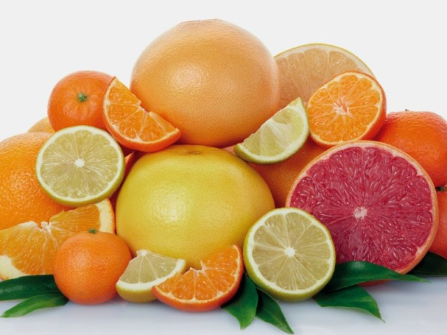
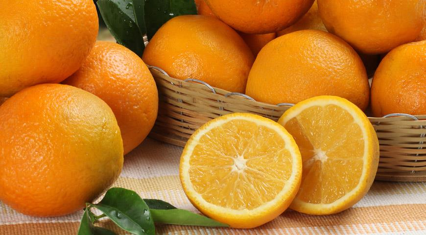
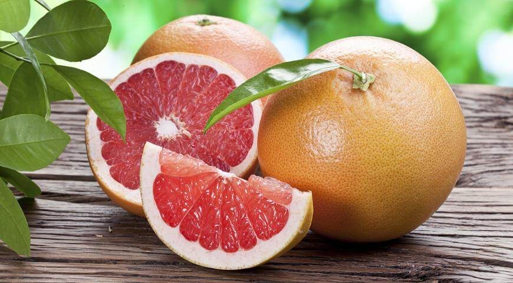
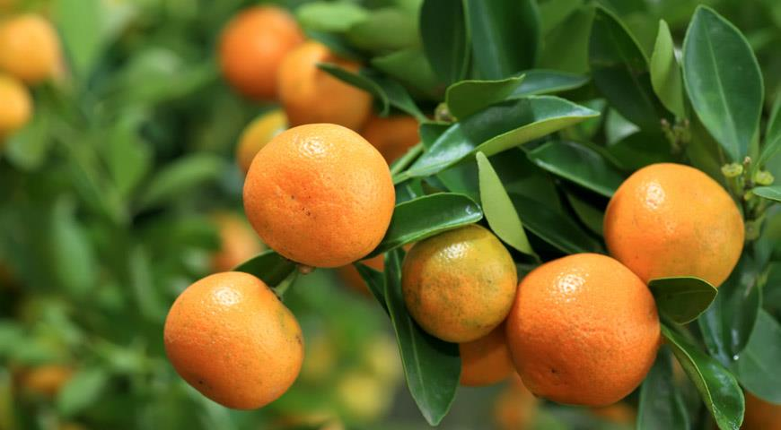

Цитрусовые (лат. Citrinae) — подтриба цветковых древесных растений семейства Рутовые
(Rutaceae), входит в трибу Aurantieae подсемейства Померанцевые (Aurantioideae).

Самый известный представитель этой группы — род цитрус (Citrus), ряд видов
которого (апельсин, грейпфрут, лимон, мандарин и некоторые другие).

- Овале Калабрезе
- Гамлин
- Верна
- Веленсия
- Парсон Браун
- Салустиана
- Хамлин

- Павловский
- Уральский комнатный
- Майкопский
- Дженоа
- Новогрузинский
- Лисбон

- Дункан вариегата
- Чиронья
- Натсу Микан
- Рио Ред
- Марш Сидлесс
- Фостер

- Мед
- Робинсон
- Храм
- Дэнси
- Клементина
- Минеола
Подробнее по ссылке